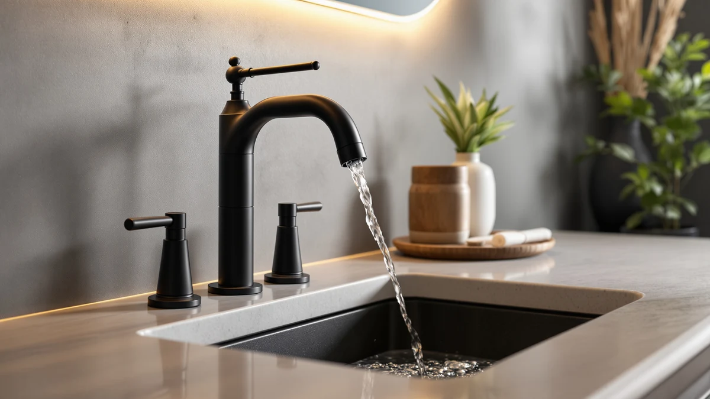

Best Vanity Faucets for Hard Water of 2026: 7 Top Picks
Prices and picks verified as of August 2026. Independent, reader-supported reviews.


Quick Answer
The KPWATER Bathroom Sink Faucets 2/3 is our pick among the best vanity faucets for hard water. It pairs a brass body with mounting that fits both 2-hole and 3-hole vanities, and at $19.99 it costs $10 less than the next-cheapest pick in this guide, so replacing a scale-worn faucet years from now stings less.
Our pick: KPWATER Bathroom Sink Faucets 2/3, $19.99 Check Price on Amazon
Bottom line: our top pick is the KPWATER Bathroom Sink Faucets 2/3 Hole at $19.99. The best budget option is the Brushed Nickel Bathroom Faucet 3 Hole 4 Inch Stainless Steel at $29.99.
Things to Know Before You Buy
- Hard water is a finish problem before it is a plumbing problem. Calcium and magnesium dry into chalky spots on the spout long before they clog anything, so pick a vanity faucet whose finish hides residue between wipe-downs.
- Brass bodies handle mineral-heavy water well. All seven picks in this guide use brass construction, which resists the corrosion that hard water accelerates in cheaper zinc castings.
- A removable aerator saves the faucet. The aerator screen clogs with scale first. If you can unscrew it and soak it in vinegar, a ten-minute chore replaces a service call.
- Widespread layouts leave room to clean. The 8-inch Pfister models put space between handles and spout, so you can wipe mineral film off the deck without working around crowded hardware.
- Match the mounting before the finish. Count your sink holes and measure the spacing. A 4-inch centerset like the Ultimate Unicorn will not cover an 8-inch widespread cutout.
We picked the best vanity faucets for hard water by comparing seven brass-bodied models priced from $19.99 to $73.93. Hard water does not ruin a faucet overnight. It dries into white mineral spots on the spout and creeps into the aerator screen. Finishes that looked flawless in the product photos slowly go dull. The fixture you choose decides how visible that buildup gets and how much work it takes to remove.
This guide covers the seven models we would put in a hard-water bathroom, from a $19.99 flexible-mount workhorse to a $73.93 widespread Pfister. Each one uses a brass body, and each one earns its spot for a different reason: price, finish, layout, or brand support. We flag the weak points too, because a faucet that fights mineral spots can still lose on warranty or installation.
For most bathrooms, the KPWATER Bathroom Sink Faucets 2/3 is the one to buy. It fits both 2-hole and 3-hole vanities, its brass body shrugs off mineral-heavy tap water, and at $19.99 you can afford to replace it years from now without a second thought. If you want a widespread layout with more presence, the FORIOUS Bathroom Faucets 3 Hole at $59.98 is the runner-up, and the two Pfister models bring name-brand parts support if that matters to you.
Why You Should Trust Us
I'm Ilane Tall, and I run Best Bathroom Faucets, where I spend my weeks comparing fixtures and reading owner feedback. I also answer the questions shoppers send in, and hard water comes up in that mail more than any other topic, because a vanity faucet that photographs beautifully can look chalky within a week once calcium-heavy tap water starts drying on it.
I also tell you what this guide is not. I did not run a year-long mineral-feed experiment on these seven faucets, and I will not invent scores to pretend otherwise. I compared vanity faucets for hard water the way a careful shopper would: brass construction, finish behavior, aerator access, mounting compatibility, and price, checked against the listed specs and prices you see on each card below.
How We Picked
Hard water rewrites the shopping criteria, so we started there. A vanity faucet for hard water needs three things before anything else: a body metal that resists mineral corrosion, a finish that keeps chalky spots from showing between cleanings, and an aerator you can reach for descaling. We made brass construction our first filter, and all seven picks passed it.
From there we sorted by layout and price. We wanted a spread that covers the sinks people own: flexible 2-or-3-hole mounting from KPWATER, a 4-inch centerset from Ultimate Unicorn, and 8-inch widespread options from FORIOUS and Pfister. Prices run from $19.99 to $73.93, so the guide has an answer whether you are patching up a rental or finishing a remodel.
We also weighed brand support. Pfister earned two spots partly because you can source cartridges and parts for its faucets years after purchase, which matters in hard-water homes where internals wear faster.
How We Compared
We evaluated each faucet against the failure pattern hard water follows: spots on the finish first, a clogged aerator second, stiff or dripping valves last. For each pick we checked the listed materials and dimensions, then examined the product photography for scale-trapping ledges and seams. We also compared finish types against how mineral residue reads on each surface.
Then we ranked the finalists on maintenance load. A faucet you can wipe down in one pass, with an aerator you can unscrew over the sink, beats a sculptural design with crevices that need a toothbrush. Where a pick carries a maintenance tax, like the matte black FORIOUS, we say so in its section rather than hiding it.
Our Picks

KPWATER Bathroom Sink Faucets 2/3
What we like
- Brass body at $19.99, the lowest price in this guide
- Mounts on both 2-hole and 3-hole vanities, so it survives a sink swap
- Compact 3.84 x 9.5 x 3.6 inch footprint suits small vanities
Flaws but not dealbreakers
- KPWATER is a small brand, so long-term parts support is uncertain
- No published cartridge rating, unlike the name-brand Pfister picks
| Material | Brass + finish |
| Size | 3.84 x 9.5 x 3.6 inches |
The KPWATER wins this guide on math. Hard water shortens the life of any faucet, so the smartest response is a fixture that does its job without a painful price tag, and $19.99 buys you a brass body here where competitors charge $50 and up for the same base metal. The 2-or-3-hole mounting is the other quiet advantage. If you move it to a different vanity, or replace your sink and end up with a different hole count, this faucet adapts instead of heading to the landfill.
The trade-offs sit where you would expect on a budget pick. KPWATER lacks the parts network and warranty reputation of a brand like Pfister, so if a cartridge stiffens after years of mineral exposure, you will replace the faucet rather than a $10 part. At this price that math still works in your favor. Buy it, unscrew and soak the aerator in vinegar when the flow weakens, and wipe the spout dry after heavy use, and it should hold its looks in a hard-water bathroom.

FORIOUS Bathroom Faucets 3 Hole
What we like
- Widespread layout leaves open deck space, so mineral film is easy to reach
- Brass body backs up the step up in price
- Separate hot and cold handles give finer temperature control
Flaws but not dealbreakers
- Costs three times as much as our KPWATER pick
- Widespread installation means three separate connections under the sink
| Material | Brass + finish |
| Size | Widespread |
The FORIOUS earns the runner-up badge on cleaning access. Hard water leaves its film across the whole sink deck, and the enemy of a quick wipe-down is crowded hardware. A widespread faucet spreads its spout and handles across three separate holes, which gives your cloth a clear path around each piece. If your weekly routine includes chasing chalky residue, that open layout saves more time than any coating.
The $59.98 price is the honest sticking point, since it buys the same brass construction the $19.99 KPWATER offers in a smaller package. You are paying for the widespread format and the more substantial presence on the vanity, and only you can decide whether your bathroom calls for that. Installation also asks more of you than a single-body faucet does: three mounting points and separate supply connections. Budget an afternoon if you are doing it yourself.

FORIOUS Black Bathroom Faucet 3
What we like
- Matte black finish hides fingerprints and smudges between cleanings
- Brass body underneath the coating, same as the pricier picks
- Matches the black towel bars and pulls in a modern bathroom
Flaws but not dealbreakers
- Dried mineral spots read white, so they show more on black than on brushed finishes
- At $56.99 it costs nearly as much as the widespread FORIOUS
| Material | Brass + finish |
| Size | — |
Black faucets split the hard-water crowd, so this pick comes with a caveat up front. Dried calcium is white, and white residue stands out on a dark surface more than it does on brushed nickel. If you let spots accumulate for a week, this faucet will show the neglect. The matte black surface does hide everything else: fingerprints, toothpaste flecks, the water smudges that make polished chrome look permanently dirty.
So the FORIOUS Black is a pick with a condition attached. Keep a cloth by the sink and give the spout a ten-second wipe after the morning rush, and the finish rewards you by looking clean for days. Skip that habit and a brushed finish will forgive you more. The brass body matches its silver sibling, the $56.99 price sits in the same range, and the choice between the two comes down to your bathroom's hardware and your tolerance for a small daily ritual.

Ultimate Unicorn Pull Down Bathroom
What we like
- Pull-down sprayer rinses the whole basin, so mineral residue does not sit and dry
- 4-inch centerset format fits the most common budget vanity cutout
- Brass body at $51.99, cheaper than either FORIOUS
Flaws but not dealbreakers
- The pull-down hose adds a wear point that fixed spouts avoid
- Ultimate Unicorn is an unknown brand next to Pfister
| Material | Brass + finish |
| Size | 4 Inch |
A pull-down sprayer sounds like a kitchen feature, and on a vanity it solves a hard-water problem most faucets ignore: the basin itself. Water that pools and dries around the drain leaves the same chalky rings that form on the spout. This Ultimate Unicorn lets you pull the wand and chase residue straight down the drain, shaving cream and toothpaste included, so deposits never get the chance to set. For households that fight scale on the sink as much as on the fixture, that wand earns its keep every morning.
We named it our budget pick among sprayer-equipped faucets because $51.99 undercuts most pull-down designs while keeping a brass body. The compromises are the ones the format brings with it. A hose and a docking collar add moving parts, and moving parts wear faster in mineral-heavy water than a fixed spout does. The brand is also an unknown, so treat this as a value buy rather than an heirloom. On a standard 4-inch centerset sink, it delivers utility the fixed-spout picks cannot match.

Pfister Courant 8-Inch Widespread Bathroom
What we like
- Pfister's parts and support network outlasts the no-name competition
- 8-inch widespread layout keeps the deck open for cleaning
- At $51.66 it costs less than both FORIOUS models
Flaws but not dealbreakers
- Conservative styling next to the FORIOUS Black or the Venturi
- Widespread mounting requires an 8-inch three-hole sink
| Material | Brass + finish |
| Size | 8 Inch |
The Courant is the pick for buyers who read the KPWATER section and thought: fine, but what happens in year five? Hard water grinds on a faucet's internals, and the brands that survive that grind are the ones you can still buy parts for. Pfister has sold faucets in the US for decades, and when a cartridge stiffens or a handle starts weeping, you can order the replacement instead of replacing the fixture. That support is what $51.66 buys here.
As hardware, it plays the classics. The 8-inch widespread layout spaces the handles away from the spout, which keeps wipe-downs quick and gives the vanity a finished, symmetrical look. The styling will not turn heads, and if you want drama the Venturi and the FORIOUS Black serve that appetite. For a hard-water bathroom you plan to live with for years, the Courant's brass construction and open layout, with a real brand behind them, make a strong case.

Pfister Venturi 8 in Widespread
What we like
- Sharper, more architectural styling than the Courant
- Same Pfister parts support as its cheaper sibling
- 8-inch widespread spacing keeps cleaning access open
Flaws but not dealbreakers
- At $73.93 it is the most expensive faucet in this guide
- The extra $22 over the Courant buys styling, not function
| Material | Brass + finish |
| Size | 8 Inches |
The Venturi is the Courant's ambitious sibling. You get the same fundamentals that matter in a hard-water bathroom: brass construction and an 8-inch widespread footprint with room to clean, plus Pfister's parts network behind the purchase. The difference is the design language. The Venturi trades soft curves for angular lines, and on a remodel where the vanity is the centerpiece, it reads as a deliberate choice rather than a plumbing default.
We will not dress up the price difference. At $73.93 this is the most expensive faucet here, and the $22 premium over the Courant buys no additional protection against mineral buildup. You are paying for the way it looks, and that is a legitimate reason to pay, as long as you name it. If you have the hard-water routine handled, meaning a wipe-down habit and a vinegar soak for the aerator when the flow weakens, the Venturi lets the faucet contribute to the room instead of hiding in it.

Brushed Nickel Bathroom Faucet 3
What we like
- Brushed nickel hides chalky water spots better than any other finish here
- $29.99 keeps it close to the KPWATER's budget territory
- Brass body, matching the construction of picks costing twice as much
Flaws but not dealbreakers
- Evolvegoods has little brand history to lean on
- The listing publishes fewer dimensions than the other picks
| Material | Brass + finish |
| Size | — |
If this guide had a category for best finish, the brushed nickel Evolvegoods would win it walking away. Brushed nickel scatters light across its grain, and that texture is what makes dried mineral spots fade into the surface instead of announcing themselves the way they do on polished chrome or matte black. In a bathroom where the water leaves residue on the spout within a day of cleaning, the finish does more for daily appearance than any other single spec.
The $29.99 price makes it the natural upgrade path from the KPWATER: ten dollars more, and the money goes into the surface treatment that hard water attacks first. The caveats mirror the other small-brand picks. Evolvegoods is an unfamiliar name, and the listing documents fewer specifics than Pfister publishes, so long-term support is a question mark. As a low-cost faucet chosen for how it handles spotting, it fills a slot none of the bigger names in this guide fill at this price.
Quick Comparison
| Product | Material | Price | Rating | Best for | Get it |
|---|---|---|---|---|---|
| KPWATER Bathroom Sink Faucets 2/3 | Brass + finish | $19.99 | 4 | Budget hard-water bathrooms, 2- or 3-hole sinks | View on Amazon → |
| FORIOUS Bathroom Faucets 3 Hole | Brass + finish | $59.98 | 4 | Three-hole vanities with room to clean | View on Amazon → |
| FORIOUS Black Bathroom Faucet 3 | Brass + finish | $56.99 | 4 | Black hardware plus a wipe-down habit | View on Amazon → |
| Ultimate Unicorn Pull Down Bathroom | Brass + finish | $51.99 | 4 | 4-inch centerset sinks, rinsing residue away | View on Amazon → |
| Pfister Courant 8-Inch Widespread Bathroom | Brass + finish | $51.66 | 4 | Brand parts support at a fair price | View on Amazon → |
| Pfister Venturi 8 in Widespread | Brass + finish | $73.93 | 4 | Design-led remodels | View on Amazon → |
| Brushed Nickel Bathroom Faucet 3 | Brass + finish | $29.99 | 4 | Spot-prone sinks that need a hiding finish | View on Amazon → |
What finish is best on a vanity faucet for hard water?
Brushed finishes win.
How do I remove hard water buildup from a vanity faucet?
Soak a cloth in white vinegar and drape it over the spout for 10 to 15 minutes, then wipe and rinse.
The Competition
Polished chrome models were the largest group we cut. Chrome is the default finish on cheap vanity faucets, and it is the worst choice for hard water because its mirror surface highlights each dried droplet and mineral streak. A chrome faucet in a hard-water bathroom looks dirty within a day of cleaning, and no amount of build quality fixes a finish problem.
We also dropped the sub-$20 faucets built on zinc alloy bodies. They match the KPWATER on price but not on metal, and hard water widens that gap: mineral-heavy water corrodes zinc castings faster than brass, and a corroded body fails at the base where you cannot see it coming. Brass construction was the entry ticket for this guide, and the zinc crowd did not have it.
Touchless and sensor faucets stayed off the list too. Their sensors and solenoid valves add cost and failure points without doing anything about mineral buildup, which is the problem a hard-water shopper needs solved. Our guide to the best touchless bathroom faucets covers them for readers with different priorities.